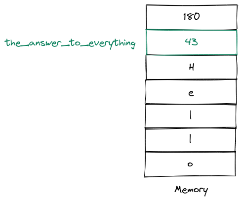
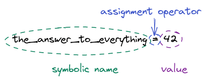

Chapter 2. Variables, data types and operators#
Variables#
Programming is all about working with data. Specifically, we need the ability to store and access data in the memory of our computer. Storing data sounds pretty simple - just write a value to some memory cell and be happy. But how do we access the value later?
Let us say that we are writing a computer game (as we will in the last chapter in this book). We will probably need to store positions and speeds of game objects. For example, we would like to store that the player has a speed of 5 units/second. But if we just write 5 to some memory cell, we will not know what it means later on. It could be the speed of the player, but it could also be the number of eliminated enemies.
In order to be able to access our data, we need to store values together with a symbolic name that tells us what the value means. For example, we could store the value 5 with the symbolic name player_speed. Or we could store the value 5 with the symbolic name enemies_destroyed. The value is the same in both cases and yet it refers to two completely different things.
Variables allow us to reflect that. Put simply, a variable is a value paired with a symbolic name that can be used to access that value.
For example, we could store the value 42 somewhere in our memory and pair it with a symbolic name like the_answer_to_everything:
Programmers say that the variable the_answer_to_everything has the value 42. We are now able to access the value we just stored using the symbolic name the_answer_to_everything.
Even if the value of a variable changes, its symbolic name stays the same. Let’s say that the answer to everything becomes 43 instead of 42 and the variable the_answer_to_everything is updated to reflect that:

Now if we access the variable somewhere from our program, we automatically get the new value (which is 43).
Consider another example: We can store the position of a ball in the variable ball_position and the speed of the ball in a variable ball_speed. If we want to change the position of the ball, we simply update the value of ball_position depending on the value of ball_speed. Accessing ball_position will now yield the new value.
The three important things we can do with variables are therefore:
Create a variable with a symbolic name and an initial value (programmers just say “create a variable” for short)
Change (update) the value of the variable using its symbolic name (programmers just say “change (update) a variable” for short)
Read the value of the variable using its symbolic name (programmers just say “access a variable” for short)
We create a variable in Python using the assignment operator =:
the_answer_to_everything = 42
This creates the variable the_answer_to_everything which has the value 42.

PEP8 note: Always surround the assignment operator with exactly a single space on both sides. Additionally, variable names should be lowercase, with words separated by underscores as necessary to improve readability.
To keep things short, instead of saying “a variable with the symbolic name foo” from now on we will just say “the variable foo”.
Do note that, unlike in mathematics, the statement the_answer_to_everything = 42 doesn’t mean that the_answer_to_everything should be equal to 42. Instead = tells the Python interpreter to create a variable with the symbolic name given on the left side of the assignment operator (the_answer_to_everything in this case) and the value given on the right side of the assignment operator (42 in this case). The assignment operator = has nothing to do with the equality operator = that you know from mathematics.
For example a statement like x + 2 = 4 which is totally sensible when doing math, has no meaning when writing code since x + 2 is not a valid variable name. In fact here is what will happen if you try to write x + 2 = 4:
x + 2 = 4
Cell In[2], line 1
x + 2 = 4
^
SyntaxError: cannot assign to operator
A SyntaxError means that we gave the Python interpreter an expression it doesn’t understand. In this case x + 2 is not a valid symbolic name, so it makes no sense to use the assignment operator here.
Remember how we printed "Hello World" using print? We can also use print to print a variable in a human-readable way:
print(the_answer_to_everything)
42
As you can see, print outputs the value of the variable (which is 42 in this case), not its symbolic name. This makes sense - when we read a variable, we care about its value.
Alternatively, we can get the unambiguous representation of the variable in a REPL by just providing the variable name to the REPL. This is similar to how we got the unambiguous representation of "Hello, World!" in the last chapter.
Getting the unambiguous representation of a variable will get the unambiguous representation of its value. Since the representation of the value 42 is again 42, this is what we get:
the_answer_to_everything
42
Once a variable is declared, you can change it later using =:
the_answer_to_everything = 42 # declare the variable
the_answer_to_everything = 43 # change the variable (i.e. update its value)
Now the_answer_to_everything has the value 43 instead of 42. However the symbolic name didn’t change, only the value of the variable did. This means that we can still access the value using the_answer_to_everything. It’s just a different value now:
the_answer_to_everything
43
Data types#
The data type of a variable describes the possible values and allowed operations on a variable. For example, if a variable has the integer data type, its possible values are integers and you can perform operations like addition, subtraction, multiplication, division etc.
Note that instead of saying that a variable has the type thingy, programmers often say that a variable is a thingy. For example if a variable has the data type integer, programmers will say that the variable is an integer.
Python has four built-in data types that are of particular importance to us right now - namely the integer data type (int for short), the floating point data type (float for short), the boolean data type (bool for short) and the string data type (str for short). Let’s have a look at these data types one by one.
These four data types are absolutely crucial to understand and you will be using them practically every time you write any code at all.
The integer data type#
Variables of the integer data type are capable of storing, well, integers (we should probably give you a moment to recover from this shock). Such variables are called integers for short (truly deep stuff).
For example, the following variables all have the integer data type:
drinking_age = 18
winter_temperature_celsius = -30
game_score = 120
Let us verify that these variables all have the integer data type by using type which shows the data type of a variable:
type(drinking_age)
int
type(winter_temperature_celsius)
int
type(game_score)
int
All three lines output int which means that the respective values are indeed integers.
The floating point data type#
Variables of the floating point data type are capable of storing, well, floating point numbers (this book is just full of surprises). These are numbers which have a decimal point. Such variables are called floats for short.
We should note that floats and real numbers are not the same thing. Floats are only approximations of real numbers. The reason they are only approximations is not because of Python, but because of the limitations of something all programmers really hate - reality.
After all, real numbers can have an arbitrary amount of digits after the decimal point - some real numbers even have an infinite amount of digits after the decimal point (like the number pi). But of course such numbers cannot be represented accurately by our hardware. Unfortunately, computers do not have an infinite amount of memory space. In fact the amount of memory available to a single floating point number is usually very finite.
Here is an example of a floating point variable:
fastest_sprint = 9.58
We can again verify that fastest_sprint is a floating point variable using type:
type(fastest_sprint)
float
The fact that floating point numbers are only approximations of real numbers has important consequences in the real world. For example if we try to add 0.1 and 0.2 we get a surprising result:
0.1 + 0.2
0.30000000000000004
We will not concern ourselves with the gritty details of floating point representation in this chapter. You can easily hold an entire university course on that (in fact some universities do).
Just remember that working with floating point numbers can and will be inaccurate. This is also the reason why programmers strongly prefer representing values as integers and only fallback to floating point numbers if they have absolutely no other choice.
For instance, if you need to store the amount of money in a bank account you should store it in cents (e.g. 15673 cents) instead of dollars (e.g. 156.73 dollars).
The boolean data type#
Another important data type is the bool data type. A boolean variable can store the two values True and False:
this_is_a_great_book = True
german_weather_is_generally_sunny = False
Boolean values are not particularly useful on their own. However they will become extremely important when we will need to do things depending on the outcome of certain logical operations.
For example we might want to determine whether a game object has been destroyed based on the outcome of a collision check. A boolean variable collides which is True if a collision happened and False otherwise certainly comes in handy in such a case.
The string data type#
The final data type we will look at in this chapter is the string data type. A string is just a sequence of characters.
String literals go either between double quotes or between single quotes:
my_name = "Max Mustermann"
my_country = 'Germany'
Note that string variables are the first variables whose unambiguous representation look different than their value. If we print my_name, we get Max Mustermann without the quotes:
print(my_name)
Max Mustermann
However if we obtain the unambiguous representation of the variable by typing the variable name in a REPL, we get 'Max Mustermann' with the quotes:
my_name
'Max Mustermann'
Note that we assigned the value "Max Mustermann" but the unambiguous representation looks like 'Max Mustermann'. These two literals represents the exact same value. The quotes aren’t part of the actual string value, they only serve to indicate a string literal.
There is no strong convention in Python regarding the use of single or double quotes. The general advice is to pick one and stick to that in your codebase. Within this particular book we will use double quotes.
Something you should try from time to time is to see what happens if you make a specific mistake on purpose. That way when you see that same mistake later on in a more complicated codebase you will already know what to do. For example, what happens if we forget the quotes in a string?
my_country = Germany
---------------------------------------------------------------------------
NameError Traceback (most recent call last)
Cell In[19], line 1
----> 1 my_country = Germany
NameError: name 'Germany' is not defined
We get a NameError: name 'Germany' is not defined. This is because in this example the interpreter thinks that Germany is supposed to be the symbolic name of a variable (since the quotes are missing). As we did not declare a variable Germany, Python raises a NameError telling us that there is no variable with the name Germany.
That is something very important to keep in mind - if you write a sequence of characters without quotes, the Python interpreter will think that the sequence of characters represents a variable name:
the_answer_to_everything = 42
# Python assumes that this sequence of characters
# represents the variable the_answer_to_everything.
# Accordingly the line below will output the value
# of the variable which in this case is 42.
# vvvvvvvvvvvvvvvvvvvvvvvvvvvvvvvvvvvvvvvvvvvvvvvv
the_answer_to_everything
42
However if you write a sequence of characters with quotes, the Python interpreter will think that the sequence of characters represents a string value:
# Python assumes that this sequence of characters
# represents the string with the value
# "the_answer_to_everything".
# Accordingly the line below will output the string
# which in this case is "the_answer_to_everything".
# vvvvvvvvvvvvvvvvvvvvvvvvvvvvvvvvvvvvvvvvvvvvvvvvv
"the_answer_to_everything"
'the_answer_to_everything'
Sometimes we need to include the values of variables in strings. You can do this using a so called format string. In order to construct a format string, we prefix the string with f and put the variables inside curly braces {}:
the_answer_to_everything = 42
quote = f"The answer to the universe and everything is {the_answer_to_everything}"
quote
'The answer to the universe and everything is 42'
Don’t forget the curly braces! Otherwise Python will think that the_answer_to_everything is just part of the string literal:
wrong_quote = f"The answer to the universe and everything is the_answer_to_everything"
wrong_quote
'The answer to the universe and everything is the_answer_to_everything'
We can use as many variables in a format string as we want to:
x = 2
y = 2
z = 4
statement = f"The value of {x} + {y} is {z}"
statement
'The value of 2 + 2 is 4'
Operators#
Equality operators#
Every data type has associated operators. An operator takes one or more values and produces a result.
Two important operators we can use with variables of essentially every data type are == (equals) and != (not equals). Consider the following variables:
x = 2
y = 4
z = 2
The variables x and z have the same values, while the variables x and y have different values. Therefore the equality operator == produces the following results:
x == y
False
x == z
True
y == z
False
The “not equals” operator != unsurprisingly produces the opposite results:
x != y
True
x != z
False
y != z
True
So far, so obvious. But what about this?
42 == "42"
False
The reason == outputs False here is because 42 is the integer 42, while "42" is a string with the content 42. These are two completely different things! In Python, a string will never be equal to an integer. Generally speaking, if two values have a different data type, they will rarely be equal.
The most prominent exception to that rule is that floating point numbers are equal to integers if they have the same value:
42 == 42.0
True
PEP8 note: Always surround binary operators with a single space on either side (this also applies to the operators below).
Arithmetic operators#
You can also use the usual arithmetic operators +, -, * and / on integers and floats. Unless you slept through school (in which case we sympathize), you probably already know what they do.
For completeness’ sake, here are some examples:
42 + 43
85
42 - 43
-1
42 * 43
1806
42 / 43
0.9767441860465116
Note that +, - and * will always return an integer if both operands are integers, but / will always return a float (even if there would be no remainder).
42 / 1
42.0
type(42 / 1)
float
Do note that if we apply one of these operations on two floating point numbers, we get another floating point number. This holds true, even if the result could be represented as an integer:
type(42.0 + 43.0)
float
So far, so (relatively) obvious. But what happens if we try to add a float and an int? Python supports mixed arithmetic. If we perform an arithmetic operation with a float and an int the result will be a float:
x = 42
y = 43.5
x
42
y
43.5
type(x)
int
type(y)
float
x + y
85.5
type(x + y)
float
Finally we should mention that if you attempt to divide by 0, Python will get very mad at you:
42 / 0
---------------------------------------------------------------------------
ZeroDivisionError Traceback (most recent call last)
Cell In[51], line 1
----> 1 42 / 0
ZeroDivisionError: division by zero
We will later learn how we can handle errors like that. For now just don’t divide by 0 (this is also generally good life advice).
Two other important arithmetic operators are the modulo % and integer division // (also called floor division) operators. These return the integer quotient and remainder of a division respectively. For example 63 / 42 is 1 with remainder 21. Therefore:
63 // 42
1
63 % 42
21
These operators also work with negative numbers, but they are rarely useful in that scenario, have unintuitive behaviour and should generally be avoided in that case.
The % operator is very useful to check if a number is divisible by another number without a remainder. If x % y is 0, then we know that x is divisible by y without a remainder.
Finally, Python also has the exponentiation operator **:
2 ** 3
8
All the operators we just introduced have so-called in-place equivalents which perform the respective operation and an assignment at the same time. For example instead of writing x = x + y you can write x += y.
Here are a few examples:
x = 42
y = 43
# Add y to x and assign the resulting value to x.
# This is equivalent to x = x + y.
x += y
x
85
x = 42
y = 43
# Multiply y with x and assign the resulting value to x.
# This is equivalent to x = x * y.
x *= y
x
1806
x = 2
y = 3
# Take the power of x with respect to y
# and assign the resulting value to x.
# This is equivalent to x = x ** y.
x **= y
x
8
Comparison operators#
Python also has the comparison operators <, <=, >, >=, which work pretty much the way you would expect:
x = 42
y = 43
x < y
True
x <= y
True
x > y
False
x >= y
False
x < x
False
x <= x
True
x > x
False
x >= x
True
Not much to say here - pretty straightforward stuff.
Using the operators on strings#
Something that might be surprising to learn is that we can use all of these operators with strings. However in this context the operators take on different meanings. The + operator becomes string concatenation:
my_str = "Hello, "
other_str = " World!"
my_str + other_str
'Hello, World!'
The * operator becomes string repetition:
my_str = "hello"
my_str * 3
'hellohellohello'
We can use the == and != operators on strings as well:
"Hello" == "Hello"
True
Two strings only compare equal, if all characters are equal (including whitespace characters). For example the string "Hello" will not be equal to the string "Hello " (with a whitespace at the end).
"Hello" == "Hello "
False
Interestingly enough we can even use the comparison operators, which compare the strings lexicographically. Every character of string is compared alphabetically until we find two characters that aren’t equal:
"a" < "b"
True
"aa" < "ab"
True
Don’t spend too much time worrying about this - you will rarely use <, <=, > and >= to compare strings. We mostly mention this for the sake of completeness.
Logical operators#
Finally, we need to introduce the logical operators and, or and not which take boolean values and return another boolean value.
The and operator takes two boolean values and returns True if and only if they are both True:
False and False
False
False and True
False
True and False
False
True and True
True
The or operator takes two boolean values and returns True if at least one of the two values is True:
False or False
False
False or True
True
True or False
True
True or True
True
The not operator takes a single boolean value and returns the negation of that value:
not False
True
not True
False
For example let’s say we are writing a game and the variable ran_out_of_time determines whether the player ran out of time and player_destroyed determines whether the player was destroyed. Let’s assume that the player wasn’t destroyed, but ran out of time:
player_destroyed = False
ran_out_of_time = True
In thas case the variable game_lost that determines whether the player lost the game might look like this:
game_lost = ran_out_of_time or player_destroyed
game_lost
True
Grouping operators with parentheses#
Just like in mathematics, you can change the precedence of operators (i.e. which operator is evaluated first) using parentheses (). Consider this expression:
2 + 3 * 4
14
Here 3 * 4 is evaluated first, since * has a higher precedence than +. However you can change that by wrapping 2 + 3 in parentheses:
(2 + 3) * 4
20